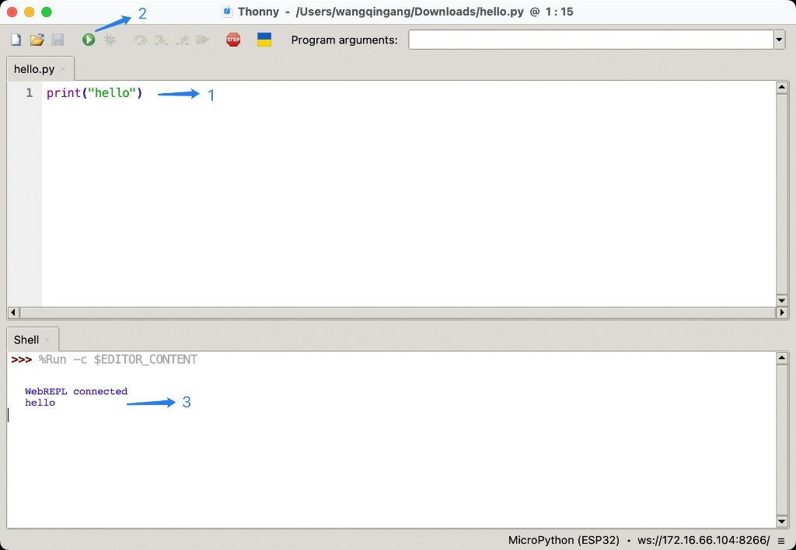

调试模式
通过调试模式，开发者可以使用 Thonny 通过 WebREPL 远程连接网关， 在网关上实时执行 MicroPython 代码、调试 APP 逻辑或交互式调用 API。
进入调试模式
进入
Other页面，移动到Micro APP部分选择
Debug Mode为Yes点击
Apply按钮，保存配置
小心
调试模式仅用于开发联调，请勿在生产环境长期开启

配置 Thonny
Thonny 是一款轻量级的 Python IDE，内置了对 MicroPython 的支持，可通过 WebREPL 直接连接网关。
打开 Thonny，选择
Run→Configure interpreter→Interpreter选项卡Which kind of interpreter should Thonny use for running your code?选择MicroPython (ESP32)Port or WebREPL选择< WebREPL >URL填写ws://<网关IP>:8266/，Password默认cassia点击
OK保存配置
备注
<网关IP> 为网关在本地局域网中的 IP 地址，请根据实际情况填写。

代码调试
通过 Thonny 编辑器编写 Python 脚本，可直接在网关上执行并查看输出。
在编辑器中编写代码，例如
hello.py，内容如下print("hello")
点击工具栏上的
Run按钮（绿色三角形）运行脚本在
Shell面板查看运行结果，WebREPL connected表示连接成功，hello为脚本输出

交互式
在 Thonny 的 Shell 面板可以直接输入 MicroPython 语句，逐行执行并立即查看返回结果，便于快速验证 API。
在
>>>提示符后直接输入语句，例如print("hello")导入 SDK 模块调用 API 并查看返回值，例如
>>> import cassiasys >>> print(cassiasys.gateway_mac()) CC:1B:E0:E4:C8:94